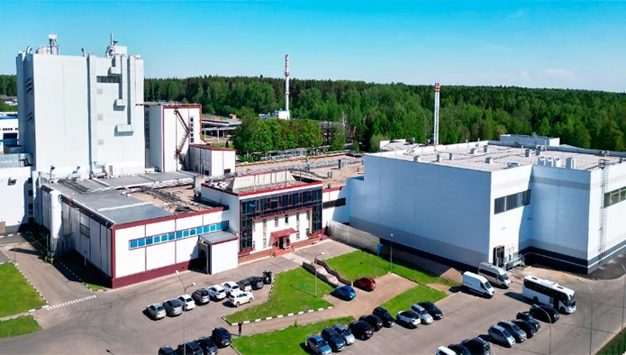

Завод «Инфаприм»
Реконструкция завода по производству сухих адаптированных молочных смесей и сухой молочной основы.
- География
- Истра, Московская область
- Тип объекта
- Промышленный объект
- Роль Трикрона
- Управление проектом в составе генерального подряда и разработка рабочей документации
